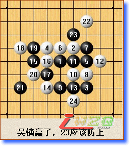
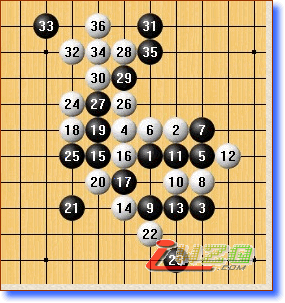
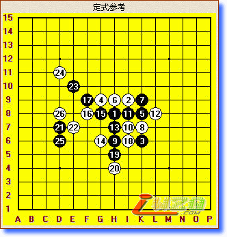
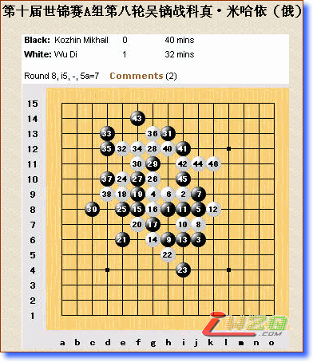

首页
五子棋新闻
原文地址：http://www.rifchina.com/Article/ShowArticle.asp?ArticleID=4376
李洪斌：
应该是白棋好下 其实老实的应黑棋没什么机会。就是容易和棋
现在吴镝不能冒险了，拿一分是一分 从开局来看，科真的任务是阻击吴镝的。前面科真都是强开局，这盘应该不符合科真的性格
吴镝现在的下法局面变得复杂了，这样简明易下




第９轮山口赢了．
现在吴镝和TUNNET还在下。